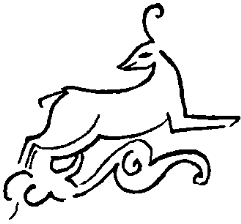

Böyle ne kadar oturdular, Tankut bilemedi. Hava iyice kararınca Çiçek, eliyle saçlarını düzelterek kameralara poz vermeye, birtakım yapay konuşmalar üretmeye başladı. Sonra bir şeye aymış gibi geldi, Tankut’un kulağına fısıldadı:
“Tankut’um bu karanlıkta ne görecekler?”
“Çiçek, bunlar kızılötesi ışınla çekim yapan kameralar!”
“Haa, anladım... İyi o zaman!”
Tankut, ağır bir küfür ederek ayağa kalktı. Ne büyülü şeydi bu “yarışmalar”! İnsanlar ne kadar teşneydi özel yaşamlarını teşhir etmeye?
Çakmağını yakarak tuvaletin yolunu buldu. Yerinde ağır hasar tespit çalışması yapmaya gelmiş bir heyetin, belki de bir “çokbilirkişi” grubunun fizyolojik artıklarıyla şenlenmiş olan tuvalet, kendileri bir şey yapmadan, daha şimdiden leş gibi kokuyordu.
Küfürlerini çeşnilendirerek çıkmak üzereydi, tamamen bir el alışkanlığıyla sifonun zincirine asıldı. Büyük bir mucize oldu. Sifon bir çağlayan gibi çağladı. Tuvaleti seller bastı. Yerine dönerken hem bu milletin sifon kullanmama alışkanlığına küfrediyor hem de, daha önemli “okazyon”ları düşünerek, bilmeyerek de olsa suyu harcadığına hayıflanıyordu.
Bunu Çiçek’e de söyledi. Kız,
“Ama Tankut’um bizim suyumuz var. Anneannemin balkonunda bir tonluk bir su deposu var!” dedi. Tankut, iyice gerilen sinirleri yatışsın diye bir şey demedi. Sustu. Sonra konuştu:
“Hani nerede, göster bakalım!”
Çiçek, Tankut’un önüne düştü. Rahmetli anneannenin odasından geçerek, kapatılmış balkona çıkılıyordu. Duvarlara tutunarak o yöne giderlerken dışarıdaki bozuk sokak ışıklarından biri aniden yanmaya karar verdi. Ev büyülü bir alacakaranlığa büründü. Yine de, eve alışkın olmayan Tankut, kadıncağızın kocaman, yüksek, iki kişilik karyolasına çarptı. Korkuyla geri çekildi.
“Bu ne Çiçek?”
“Hiç, anneannemin yatağı. Eskiciler almadığı için burada kaldı!”
“Kızım, manyak mısın sen? Niye söylemiyorsun bu evde bir yatak olduğunu? Duvara yaslanıp oturmaktan sırtım tutuldu!”
“Ama Tankut’um, kameraları yalnız salona koymuşlar!”
Tankut, kendisinin yarattığı ve esiri oldukları bu dünyaya ağız değil, ciğer dolusu küfretti içinden. Dışından,
“Güzelim, ben şimdi onların birini buraya alırım! Unutma tarım meslekte okudum ben!” dedi. Su deposuna bakmaksızın geri döndü. Kameralardan birini söktü. Getirdi. Karanlığa iyice alışan gözleriyle odaya bakındı. Boş duvarları eliyle yokladı. Yatağın arkasında, aradığını buldu. Bir zamanlar herhalde güzel, parlak kumaştan çantası içinde bir adet Kuran'ın asılı olduğu çiviye kabloyu iyice doladı, kamerayı sıkıca bağladı. Laf olsun diye sordu:
“Bu çivide ne asılıydı Çiçek?”
“Hiç, şey... sevişen çıplak bir çiftin resmi vardı...”
“!”
“Dedem bu işlere biraz meraklı bir adammış, tavan dahil, odanın her tarafında aynalar var...”
Kız biraz daha konuşursa kim bilir daha neler söyler korkusuyla, lafını kesti:
“Tamam, Çiçek... tamam!”
Sonra beraberce balkona çıktılar. Yaşasın, deponun yarıdan fazlası doluydu! Ayrıca, loş ışıkta tam göremedi ama, birtakım sandık sepet, eski püskü de vardı balkonda. Her iki çantasında bulunan paraları oturup saysa bu kadar sevinemezdi. Geri döndüler. Çiçek yatağın üstüne oturdu. Kameraya karşı şuh bir poz takındı. Tankut’un aklına hatıraları üşürdü, eşeğin aklına karpuz kabuğu düşürdü:
“Tankut’um şimdi giyeyim mi cicilerimi?”
“Yok, yok... bir şeyler yiyelim de öyle.”
Tekrar salona çıktılar. Tankut poşetlerden çıkardığı hazır sandviçleri buldu. Cebindeki tükenmez kalemle bastırıp mantarını içine kaçırarak şarap şişelerinden birini açtı. Ağzına dikti. Büyük, kocaman Urus Koca çanağından ne kadar alabilirse o kadar büyük bir yudum aldı. Sabahında kâbus, kavga, cinayet olan bugünün gecesinde hayat güzelleşiyor muydu acaba? Şişeyi Çiçek’e verdi. Kız şişeyi kaptı. Kameralardan birinin karşısına geçti. Dans ede ede, “bu akşaaam bütüüüün mey–haneleriniiii...” diye başlayarak, aslında pek fena olmayan sesiyle bir şarkıya asıldı. İyice sarhoşmuş da ağzından taşırmış gibi, kıymetli bir yudumun yarısını heba ederek şişeyi başına dikti. Yağmurda ıslanan kafasını kurutmak için başını hızla iki yana sallayan bir köpek gibi başını salladı. Yüzünü ekşitti. Bu milletin içki kültüründe yapılması gerekli hareketlerdendi herhalde. Yoksa izleyicilerden tam puan alamazdı. Arkasından haşmetli bir nara gelip de konu komşuyu rahatsız etmesin diye Tankut, zorla geri oturttu kızı. Zavallı, televizyonculardan alacağı parayı hak etmek için, ara ara, durup dururken düğmesine basmışlar gibi birden ayağa fırlıyor, bu tip atraksiyonlar yapıyordu. Yediler, içtiler. Çiçek bir ara kayboldu. Geri döndüğü zaman üzerinde yine bikinisi vardı.
Tankın, eşkıya, çete, komitacı filmlerinden gördüğü gibi kalın deri montunu çıkararak kızın pütürcüklerle dolmuş çıplak omuzlarına koymak istedi. Evet, evet, kendisi kanundışı bir çete lideriydi. Kanun İstanbul’da oturan padişahın kanunu olunca, dışına da çıkılırdı. Ama evelallah, sonra peygamber, öyle Hazar mazar değil sapına kadar Osmanlıydı. Bir Bulgar mayınına basarak sakat kalmış küçük kardeşine koltuk değneği alabilmek için çetecilerin önünde dans eden güzeller güzeli Rum dilberi Despina’yı Makedonyalı Bulgar çetecilerden Argunov’un yatağından kaldırmış, çekip almıştı.
Kıpırdayacak fırsatı bulamayan ve uzun paçalı donu içinde tir tir titreyen, titredikçe paçalı dona kurduğu alçakgönüllü çadırı sönen Bulgar itini tek kurşunla yatağa zımbalamıştı. Şimdi Rodop Dağları’nda bir mağarada yiyip içiyorlardı. Yiğit adamları elde tiner şişesi, şey... silah, mağaranın ağzında nöbet bekliyordu. Tecavüze uğramak üzere olan güzel dansöz kız, sahip olduğu her şeyi, bekâretini sunarak bu gözü kara yiğide, bu attığını vuran avcıya birazdan bu iyiliklerinin ödülünü verecekti! Kızın çığlıklarıyla geri, Avcılar’a döndü.
“İstemem, üşümüyorum... Donsam da istemiyorum senin ceketini... Şeftan var... Şey... Şef var onun içinde...”
Ancak o zaman iç cebindeki Hayal Taşı’nı hatırladı. Usulca elini iç cebine sokarak taşı aldı. Para çantalarından birinin içine koydu. Sonra kendinden emin, tok bir sesle konuştu:
“Haydi al şunu omuzlarına, ben Şefe söyledim, seni bir daha rahatsız etmeyecek!”
Çiçek, çekinerek de olsa montun sırtına örtülmesine ses çıkarmadı. Yavaş yavaş gevşedi. Kendini bıraktı. Yemeye, içmeye devam ettiler.
Rodop Dağları mağarası imgelemi, bir kez daha Tankut’un içinde ayaklandı. İçkiyle ısınan Despina, kameralardan birinin karşısına geçmiş, hafif hafif salınarak oynamaya başlamıştı. Ay aydınlığı billur bedeninde tuhaf gölgeler yaratıyor, Despina’nın çekiciliğini pek ziyade kılıyordu. Ay parçası Despina nazlı bir edayla montun sırtından kaymasına izin verdi, ittihatçı fedailerden –bilirsiniz fedailer Çerkeş olur, cemiyetin büyük başları gibi dönme ve Sabetayist değildirler– babası Argun Türkü, anası Çerkeş prensesi olan Şafak Talihi Bey, karabinasına yaslanarak önünde sağa sola, yukarı aşağı, ritmik salınmalar yapan dünya nimetlerine baktı. Vatan için geride bıraktığı üç adet yavru... Neyse, vatan için çıktığı bu dağda, dağ hayatının gerekleri neyse yapacaktı ki durum çakozlanmasın. Şişeden bir yudum daha aldı. Despina iyice sapıtmış, nasıl becerdiyse bikininin üstünden de kurtulmuştu. Yüzünü Şafak’a döndü, elinde salladığı bikini üstünü büyük bir maharetle genç adama doğru savurdu. Bu işlerde ustalaşan bikini üstü gitti, Şafak Talihi’nin yüzüne dolaştı. Şafak’ın burnuna mis gibi bir çiçek kokusu doldu...
Tankut “Bu kadarı fazla! Patrik olsa dayanmaz!” diyerek ayağa kalktı. Çiçek’in debelenmelerine aldırmadan kızı kaptığı gibi yatak odasına götürdü. “Tozludur bunlar şimdi” diyerek örtüyü, yorganı çektiği gibi aşağı attı. Çiçek’i yatağın içine bıraktı. Çiçek yalvarıyordu:
“İddiayı kaybedeceksin Tankut’um! Ne bir haftası, daha sekiz saat olmadı başlayalı!”
Tankut durdu. Durmasının nedeni çalışmayan kamera değil, yataktan taşan, ölüm ve mentollü krem kokusuydu. Kızı ayağa kaldırdı. Altından çeşitli gazete kâğıtları, buruşuk bir mendil ve eski bir battaniye çıkan koca yatağı kaldırdı, ters çevirdi. Çiçek hâlâ yalvarıyordu. Tankut yere fırlattığı mendili buldu, iğrenerek de olsa açtı. Kameranın objektifine bağladı. “Oldu mu?” dedi.
“Tankut’um ne kadar akıllısın. Sorarlarsa bozuldu mu diyeceksin!”
Şafak Talihî Bey, Despina’nın sızlanmalarına cevap vermedi. Şu mor dağların arkasında batan Macar güneşinin ortalığı tatlı bir kızıla boğduğu bu kanlı Rodop akşamında ezberi şaşmış, kör topal bildiği Rumcasını tamamen unutmuştu. Aşkın evrensel diliyle konuşarak anlattı derdini Despina’ya.